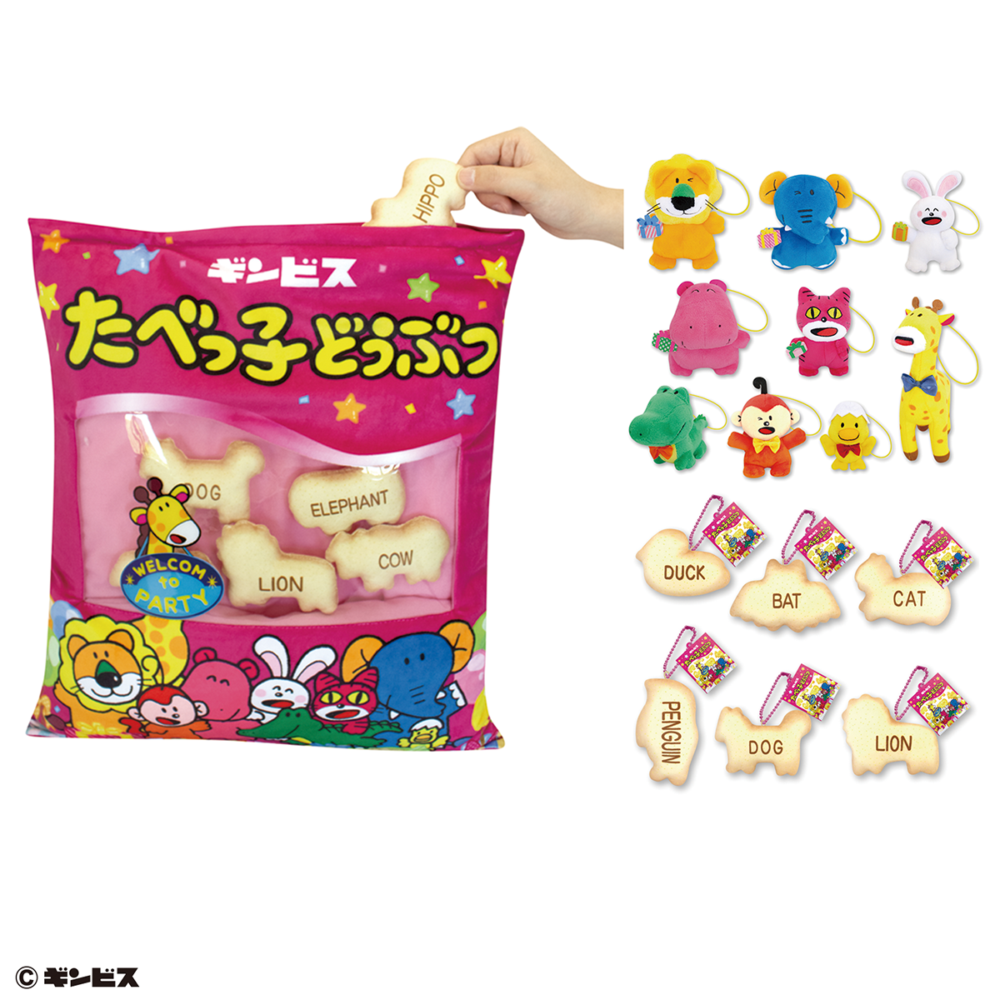
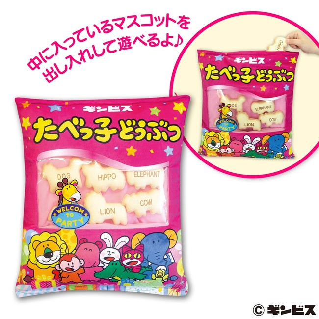
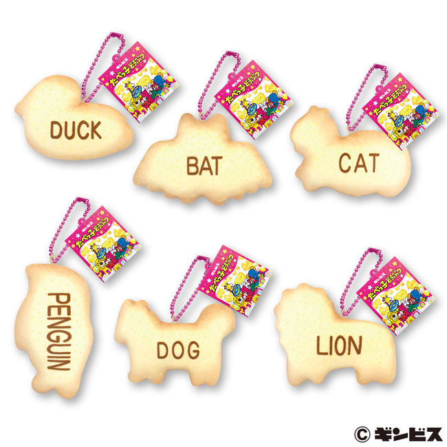
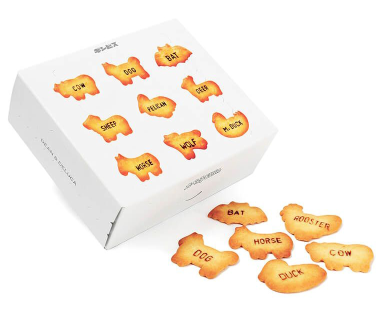
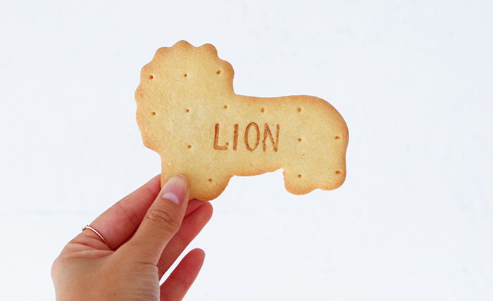
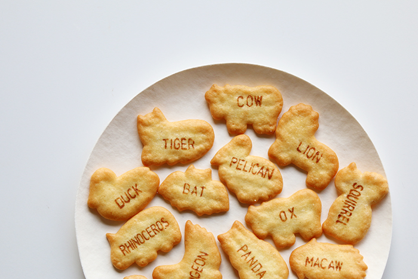

TODAY'S TOPIC
5月5日はたべっ子どうぶつの日
５月５日は「たべっ子どうぶつの日」。それに合わせて、各種プライズゲームにたべっこどうぶつの新景品が追加されます。その景品のいくつかをご紹介しますね。

img source -(https://prtimes.jp/main/html/rd/p/000000096.000060567.html)
たべっ子どうぶつ、私は幼いときによく食べていたおやつだったので、懐かしさもあって今回の内容に惹かれてしまいました。クレーンゲームなどの景品として画像にあるようなクッション、ぬいぐるみが追加されるようです。 クッションの中から、実際のクッキーを模したミニクッションが出てくるの、子ども達的にはとても楽しい仕組みのように思います。英語のお勉強も捗りますね。


img source -(https://prtimes.jp/main/html/rd/p/000000096.000060567.html)
たべっこどうぶつって今食べても美味しいんですよね。スーパーやコンビニで小袋で売っているのですが、不意に手にとってしまうときがあります。美味しいし、思い出もあるし、「大人のたべっこどうぶつあったら絶対に売れるのに。。」 と思っていましたが、やっぱりあるんですね、大人のたべっこどうぶつ。DEAN&DELUCAとのコラボ商品として既に2018年に発売されていました。



img source -(https://www.haconiwa-mag.com/life/2018/11/dean-deluca/)
可愛い〜〜。大きいビスケットと小さいビスケットのラインナップがあるようです。これは私たち世代には刺さる商品ですし、今度友達の誕生日プレゼントにあげたいと思いました。
みなさんも思い出のおやつはありますか？